Femke Art
Galerie
Mein Weg
diary serie
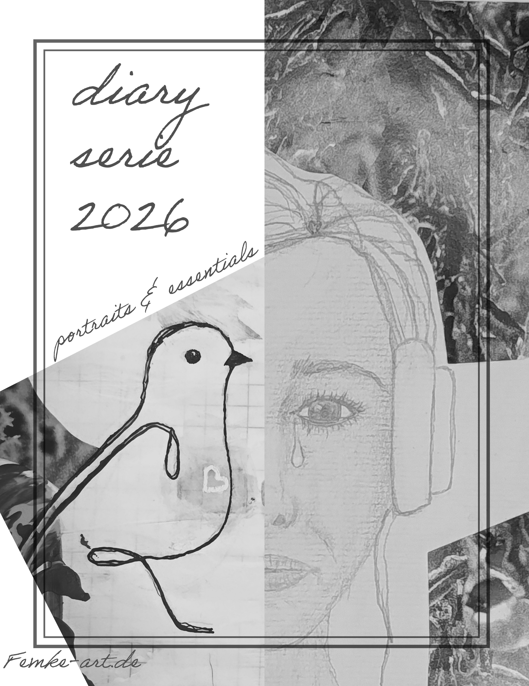
Lange Zeit war meine Kunst für mich ein Werkzeug der Verarbeitung – ein Raum, um Erlebtes zu ordnen und Schichten abzutragen. Heute hat sich dieser Fokus gewandelt. Was früher Suche war, ist heute Ankunft. Meine Arbeit ist zu einer spielerischen Ausdrucksweise meines Erlebens der Welt geworden. Ich erschaffe nicht mehr, um etwas zu bewältigen, sondern um das zu feiern, was ist. Es ist der Übergang von der Rekonstruktion der Vergangenheit hin zur puren Präsenz im Jetzt. In meinen aktuellen Serien wie den diary portraits erlaube ich mir eine radikale Freiheit: Kunst ist für mich kein Spiegel mehr, den ich für andere halte, sondern ein direktes, ungefiltertes Ja zu mir selbst. Spielerisch, ehrlich und ohne den Zwang, etwas werden zu müssen – weil bereits alles da ist.
Leichtigkeit
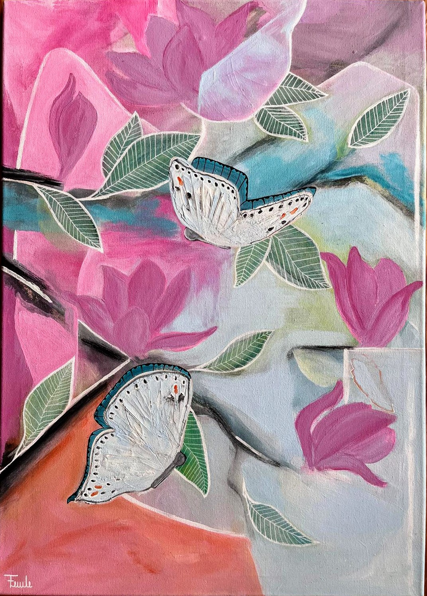
Dieses Werk wurde inspiriert durch einen Wandlungsprozess und steht für Transformation und die wiedergewonnene Freiheit.
Dieses Werk und alle weiteren aus den Jahren 2024-2025 wurden bei ihrer Teilnahme beim Luxembourg Art Prize mit der Verdiensturkunde für künstlerische Leistung ausgezeichnet.Der Engel
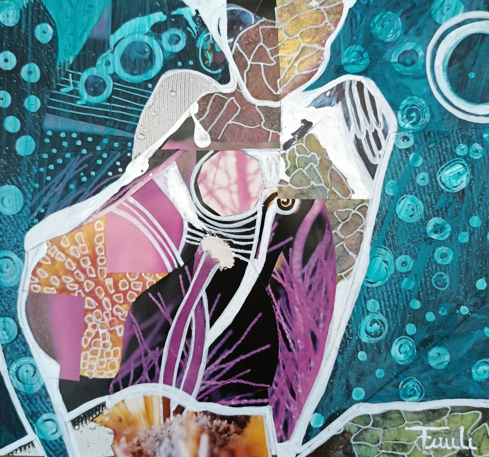
2025 arbeitete ich viel mit Collagen. Diese Bildausschnitte sind für mich Experimentierfeld und Inspiration zugleich. Letztlich ist das Gestalten für mich weniger ein „Tun“ als ein „Zulassen“. Dabei ist mir die Ästhetik wichtig: Die Freude am Schönen und ein Sinn für Harmonie begleiten jeden meiner Schritte – auch dort, wo das Motiv abstrakt oder fragmentarisch wird.
Die Freude auf dem Weg
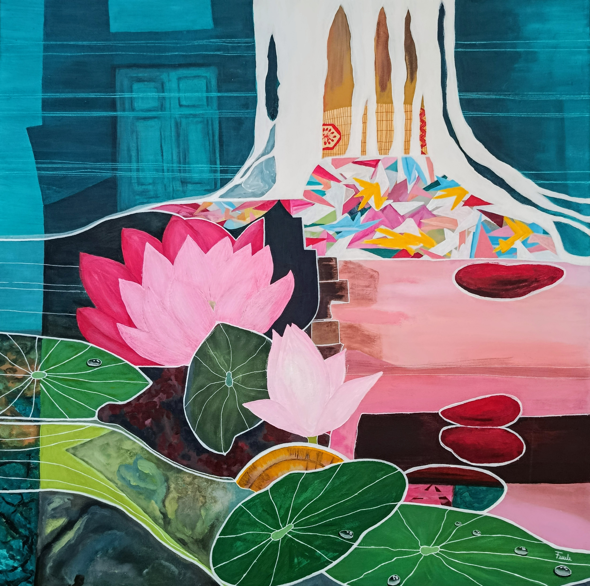
Das Werk „Die Freude auf dem Weg“ ist ein Paradebeispiel für meinen zweistufigen Schöpfungsprozess, der den Wandel von der intuitiven Suche zur bewussten Ausarbeitung meisterhaft widerspiegelt. Der Ursprung liegt in einer kleinen, vorbereitenden Collage (siehe unten). Hier wurden Bildausschnitte rein nach farblicher Harmonie zusammengefügt und mit Acrylstiften akzentuiert. Diese Vision übertrug ich anschließend auf die großformatige Leinwand. Während die erste Phase noch von großflächigen, intuitiven Farbfeldern geprägt war, wandelte sich die Arbeitsweise dann im Verlauf zu höchster Akribie.
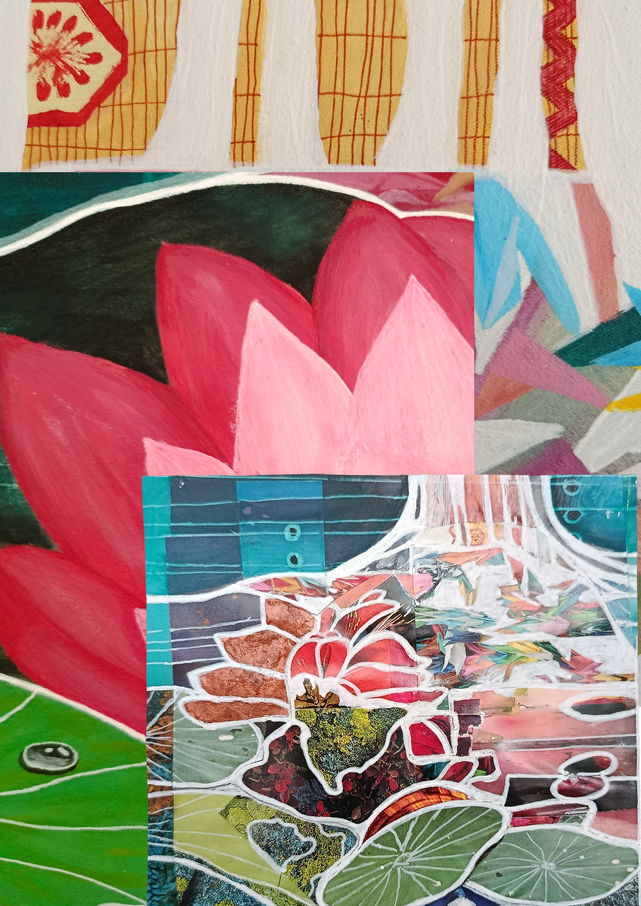
Obstkorb
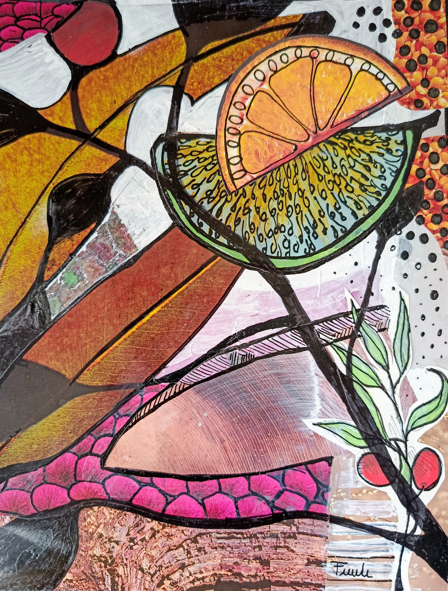
Das Werk „Obstkorb“ hat für mich einen besonderen Stellenwert, weil es der Ausgangspunkt meiner neuen Stilrichtung im Jahr 2025 war. Entstanden ist es ganz spontan im Urlaub, als ich aus Langeweile zu alten Bildbänden und Zeitschriften griff und intuitiv begann, Fragmente zu kombinieren. Aus diesem spielerischen Moment entwickelte sich eine Komposition, die mich selbst überraschte.
Greeen
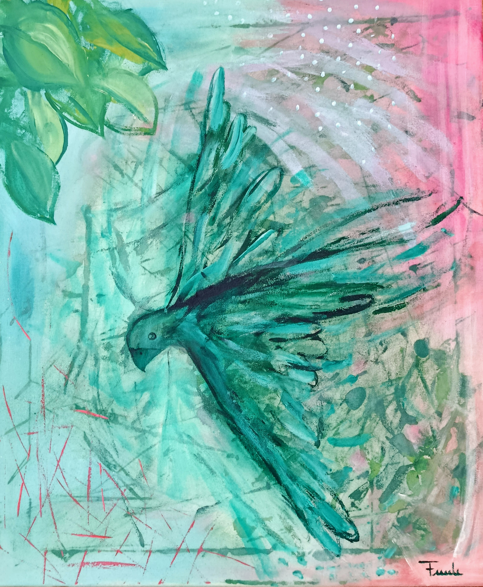
Begleitet wurde diese Entstehungsphase intensiv durch das Lied „Leben“ des gleichnamigen Künstlers Greeen aus Mannheim, dessen Musik als inspirierender Nebensatz in die emotionale Atmosphäre des Bildes einfloß.
Die Schwalben
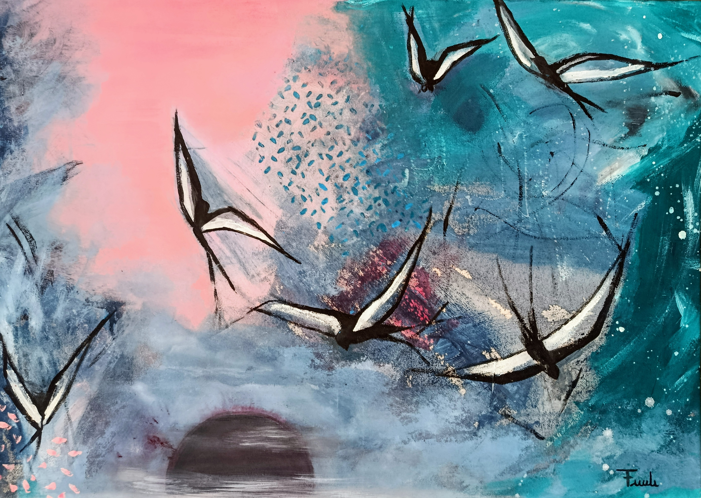
Ein entscheidender Wendepunkt war die intuitive Malerei von Flora Bowley. Durch sie habe ich gelernt, Kontrolle loszulassen und meinem Gefühl zu vertrauen. Dieser freie Zugang öffnete meinen kreativen Prozess nachhaltig. Kreativität ist für mich ohnehin nicht aufs Atelier beschränkt. Sie begleitet mich im Alltag: beim Sammeln von Fundstücken, im Spiel mit meinen Kindern oder im unerwarteten Flow-Zustand. Diese Offenheit führt mich immer wieder zu neuen Materialien.
Intuitive Landschaft
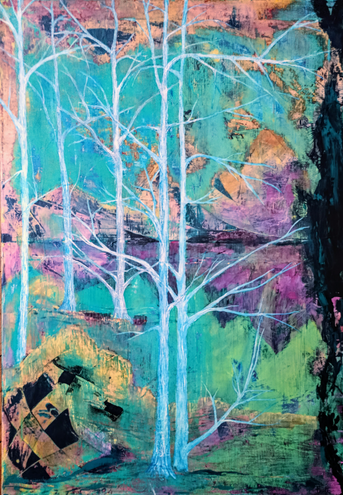
Dieses Werk war mein erstes bewusst intuitives Bild und entstand über mehrere Monate hinweg. Ursprünglich begann es als maritime Landschaft (siehe unten), doch im Prozess löste ich mich immer mehr von der ursprünglichen Idee. Durch wiederholtes Abwaschen, Übermalen und erneutes Auftragen von Farbschichten entwickelte sich das Bild Schritt für Schritt in eine völlig neue Richtung. Der Prozess war ein ständiges Wechselspiel aus Loslassen und Wiederfinden: Jede Schicht brachte etwas Altes zum Verschwinden und etwas Neues zum Vorschein. Ohne festen Plan, nur geführt von Farbe, Bewegung und Gefühl, entstand schließlich ein Bild, das nicht mehr an seine Ausgangsform erinnert – sondern an den Moment, in dem ich zum ersten Mal wirklich intuitiv gemalt habe.
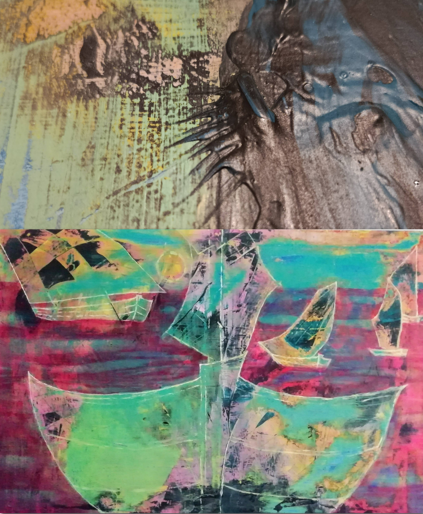
Intuitive Künstlerin aus Mannheim
Was mit dem Zeichnen von Pflanzen und Landschaften begann – früh inspiriert von Claude Monets Farbenwelt – ist heute meine eigene künstlerische Sprache zwischen Realismus und Abstraktion. In meinen Arbeiten fließen diese Pole ineinander und spiegeln die Vielschichtigkeit meines Erlebens wider. Als sensibler Mensch ist die Kunst für mich ein Anker. Sie ist der Ort, an dem ich Eindrücke ordne, Ruhe finde und innere Zustände sichtbar mache.
Künstlerin Femke
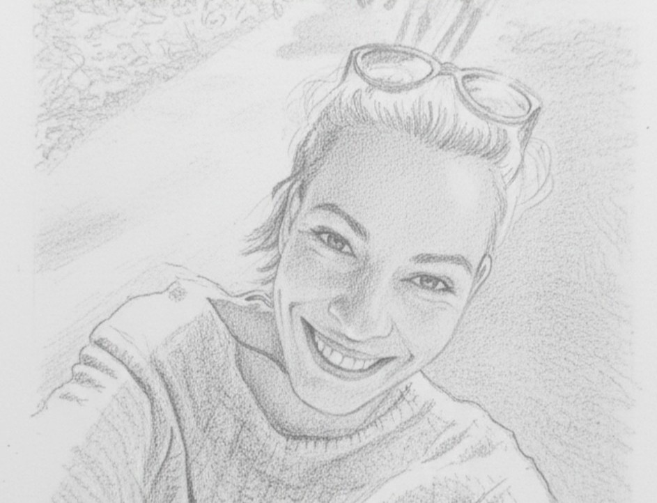
Auszeichnung
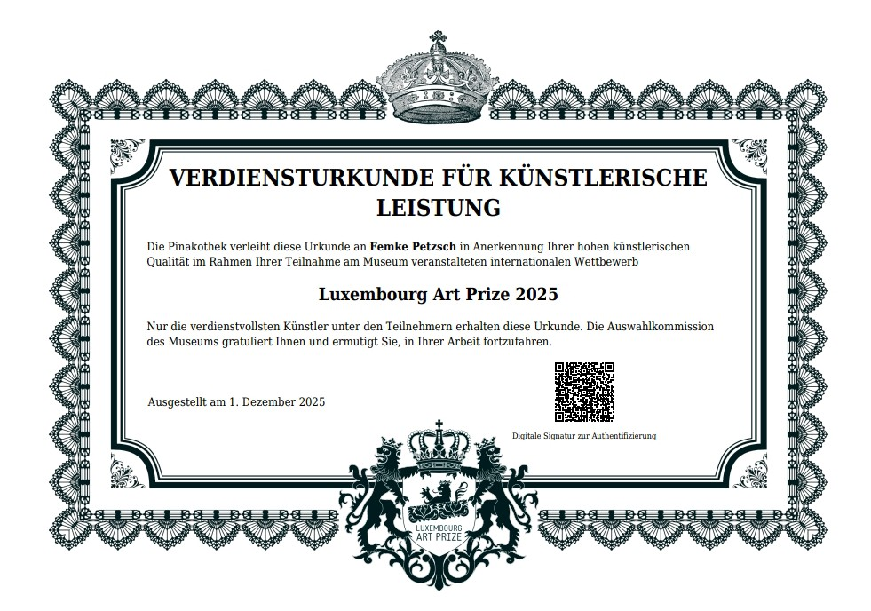
Aktuelles
Ausstellung 2026
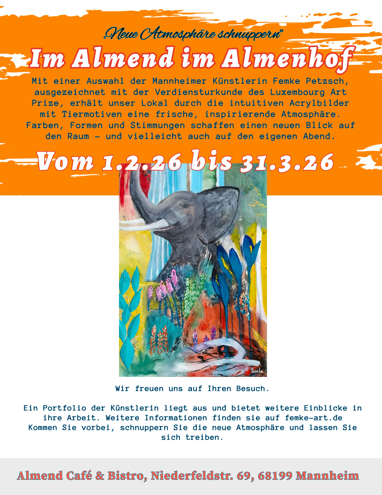
Der Dialog
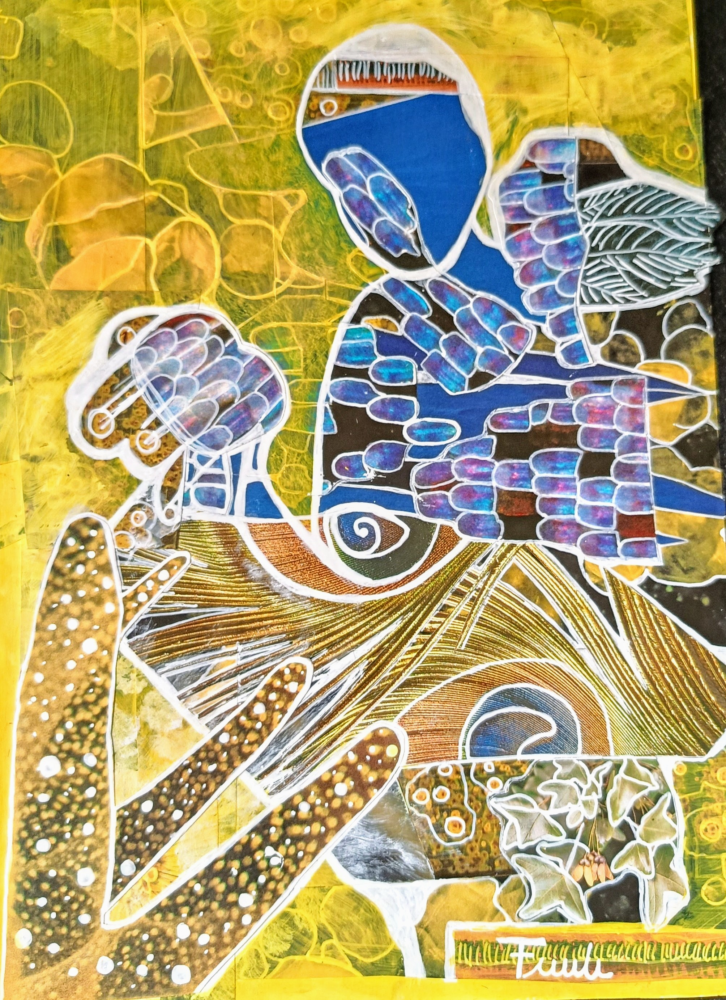
Entstehungsjahr: 2025,
Medium: Collage und Malerei,
Maße: 20 cm x 15 cm,
Signatur: Handsigniert als „Femke“,
Auszeichnung: Verdiensturkunde für künstlerische Leistung, Luxembourg Art Prize 2025
Weitere verfügbaren Werke: Der Engel
Die Schwäne
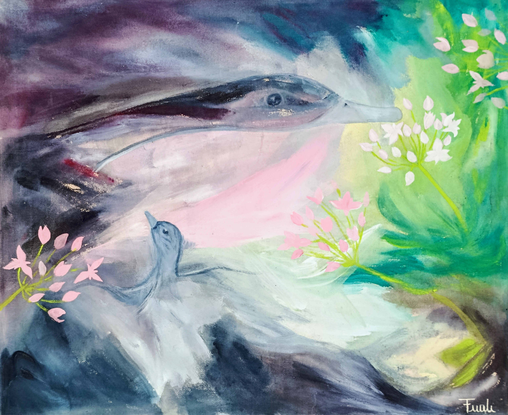
Entstehungsjahr: 2024,
Medium: Acryl auf Leinwand,
Maße: 60 cm x 50 cm x 1,5 cm,
Signatur: Handsigniert als „Femke“,
Auszeichnung: Verdiensturkunde für künstlerische Leistung, Luxembourg Art Prize 2025
Weitere verfügbaren Werke: Der Elefant, Die Schwalben zu je 330 Euro
Bei Fragen zu Versand und Porto, schreibt mir gerne.
Kontakt:
Ich freue mich über Austausch und neue Impulse,
schreib mir gerne eine E‑Mail.
Da mir Inklusion ein großes Anliegen ist, arbeite ich stetig daran, diese Webseite für alle Menschen zugänglich zu gestalten. Solltest du dennoch auf Barrieren stoßen oder Tipps zur Verbesserung der Barrierefreiheit haben, freue ich mich sehr über deine Rückmeldung!
Archiv
Ateliereinblick
Leichtigkeit
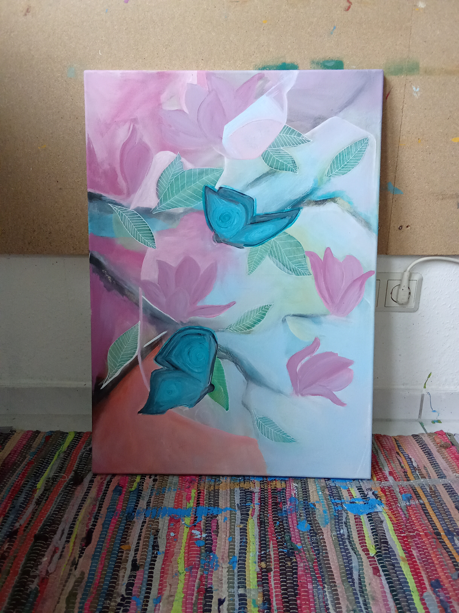
Ein Einblick in den Prozess des Werkes.
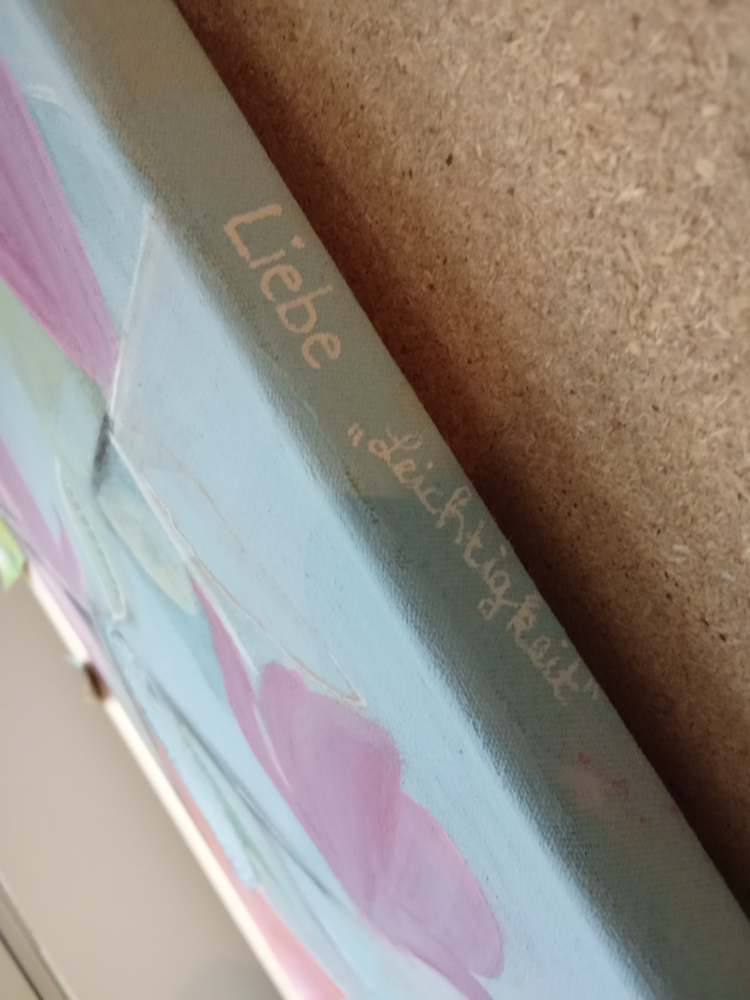
Hoffnung
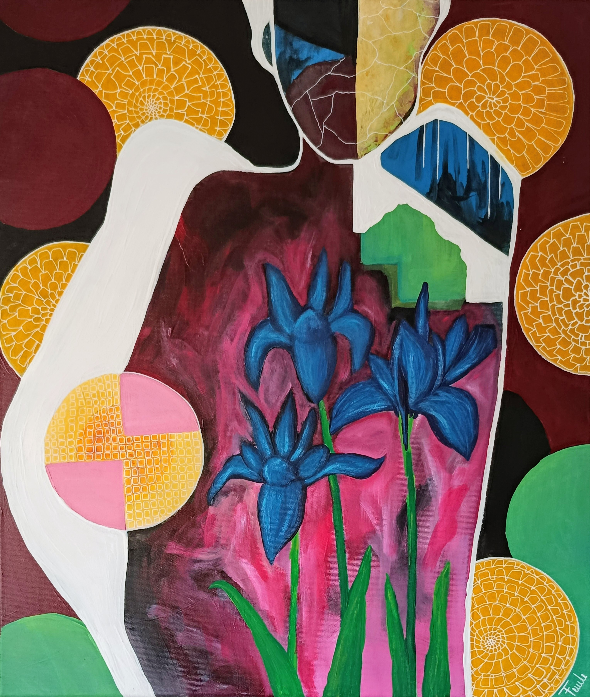
Trotz der Auszeichnung spürte ich nach dem Wettbewerb, dass das Bild nicht mehr meiner inneren Vision entsprach. In konsequenter künstlerischer Freiheit habe ich es deshalb übermalt – ein bewusster Schritt, der meinen Übergang in eine neue schöpferische Phase markiert.
Der Elefant
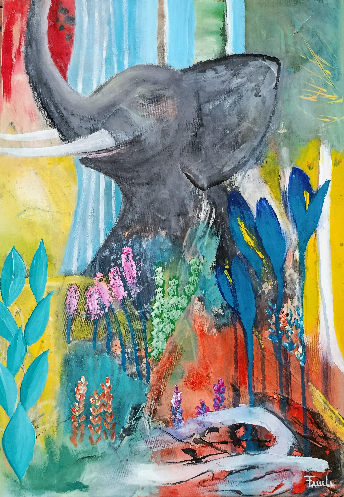
Eine Interpretation von Stärke und Sanftheit.
Fundstücke
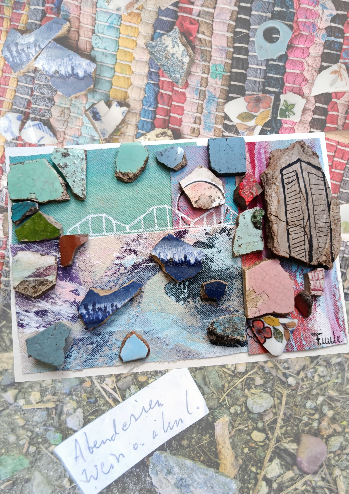
Oft bin ich im Waldpark unterwegs. Eigentlich nur zum Laufen, aber meine innere Elster gewinnt immer. Wer die Wege dort kennt, weiß, dass man da buchstäblich auf Scherben läuft – alter Schutt, der da irgendwann mal zur Befestigung gelandet ist. Anstatt nur drüberzustolpern, hab ich angefangen, die Stücke einzusammeln. Und beim Legen dieser Collage kam mir der Gedanke: Eigentlich ist das Leben ja genau das. Wir alle sammeln Scherben. Brüche, Kanten, Dinge, die mal ganz waren und jetzt eben nicht mehr. Am Ende ist das Ganze oft viel interessanter als das, was vorher „perfekt“ war. Das hier ist mein ganz persönliches Stück Waldpark-Boden (Postkartengröße), neu sortiert.
Die Kraniche
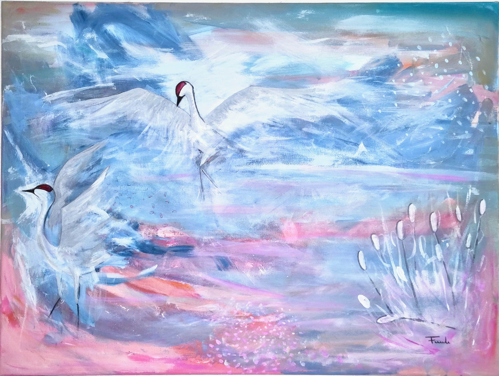
450 Euro -verkauft-
Auszeichnung: Verdiensturkunde für künstlerische Leistung, Luxembourg
Art Prize 2026
Selbstportrait
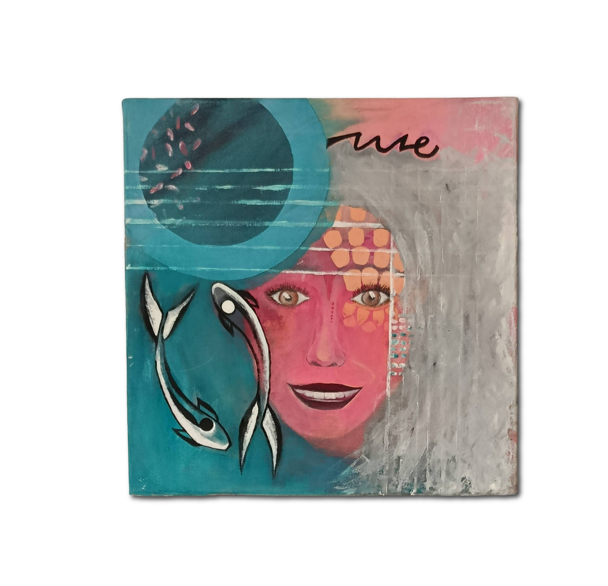
we oder me?
Rundschach

Dieses handgefertigte Rundschach bricht mit der klassischen Geometrie. Durch die kreisförmige Anordnung der Felder entstehen völlig neue Zuglinien und taktische Möglichkeiten. Die natürliche Maserung des Holzes wurde so in die Komposition einbezogen, dass ein Astloch zum lebendigen Auge eines Hasenkopfes wird. Es ist dieses Zusammenspiel aus bewusster Gestaltung und dem, was die Natur vorgibt, das meine Arbeiten ausmacht.